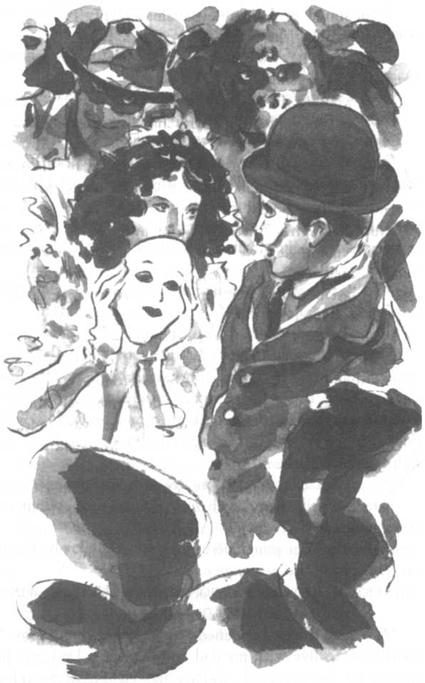

Listen to Part 1:
'Cậu thấy buổi tiệc thế nào, Tom?' Danny hỏi.
Tom nhìn vào người bạn của mình. Danny ăn mặc như Chuột Mickey. Cậu đội đôi tai đen lớn và mặc quần dài màu đỏ. Trên mặt Danny là một chiếc mặt nạ màu đỏ. Tom đội một chiếc mũ quả dưa, một bộ vest đen, một cây gậy và một đôi giày to. Anh ấy ăn mặc như Charlie Chaplin.
Tom nói: 'Buổi tiệc rất tuyệt'. 'Có rất nhiều bộ đồ hóa trang tuyệt vời. Nhưng bộ đồ Charlie Chaplin của tôi là tuyệt nhất. Tuyệt luôn. Cậu lấy nó ở đâu vậy?'
Danny mỉm cười. 'Một người bạn tặng cho tôi. Một học sinh mới khác. Cô ấy sẽ là một trong những nhà thiết kế trẻ tuổi giỏi nhất đất nước này.'
'Thật sao?' Tom nói. 'Cô ấy tên là gì?'
Nhưng Danny không trả lời câu hỏi của Tom. 'Tôi phải đi nhảy đây', cậu nói.
Trong vũ trường, một đám đông người trong những bộ trang phục kỳ lạ đang nhảy theo tiếng nhạc lớn.
Khi Danny đi nhảy, một cô gái mặc một chiếc váy dạ hội tuyệt đẹp tiến đến chỗ Tom.
'Xin chào', cô ấy nói, 'chắc hẳn anh là Charlie Chaplin'.
Tom cười. 'Đúng rồi', anh ấy nói. 'Còn cô là ai?'
Listen to Part 2:
'Cinderella' cô gái nói. 'Nhưng ngoài đời tôi không giống cô ấy đâu.'
Tom đã nghe giọng nói đó ở đâu rồi nhỉ?
'Ý cô là sao?' Tom hỏi.
'Thế này, hoàng tử của tôi đã bỏ rơi tôi.'
'Tại sao?'
'Anh ấy không biết tôi yêu anh ấy nhiều như thế nào.'
Tom sửng sốt nhìn chằm chằm vào cô gái Lọ Lem. Có một điều gì đó trong giọng nói đó —
'Tôi rất buồn. Tôi muốn khiến anh ấy ghen tuông. Tôi gần như kết hôn với một người đàn ông khủng khiếp.'
Tom vẫn chăm chú nhìn chằm chằm vào cô gái.
'Cô có muốn khiêu vũ không, ngài Chaplin?' cô ấy hỏi.,
Listen to Part 3:
'Được...'
Trong lúc nhảy, Tom cố gắng suy nghĩ thật tỉnh táo. Nhưng anh ấy càng ngày càng bối rối. Chuyện gì đang xảy ra vậy? Cô gái này có giọng nói rất giống...
Đột nhiên, tiếng nhạc ngừng và có một thông báo: '12 giờ rồi. Mọi người phải tháo mặt nạ ra'.
Cô gái nhấc chiếc mặt nạ khỏi khuôn mặt mình. 'Chúc mừng sinh nhật, Tom' cô ấy nói.
'Rita! Nhưng cô đã bỏ đi với Spooner-'
Rita nói: 'Như thường lệ, anh lại nhầm rồi, Tom'. 'Tôi không bao giờ gặp lại anh ta sau khi chạy trốn khỏi văn phòng đăng ký kết hôn. Ngày hôm sau, tôi đã đến gặp cảnh sát. Tôi đã kể cho cảnh sát nghe mọi thứ tôi biết về Spooner. Cảnh sát nói với tôi rằng Spooner là một kẻ lừa đảo. Sau đó, cảnh sát kể với tôi rằng anh là người đã giúp đỡ họ'.
'Vậy là cô trở thành một người mẫu nổi tiếng mà không cần Spooner?'
Rita cười. 'Anh không đọc tờ báo mà chị gái Shana để lại cho anh à?'
Đột nhiên, Tom nhớ chính xác những gì mình đã nhìn thấy trên trang nhất của tờ báo.
CÔ GÁI SILVERTON TRỞ THÀNH NGÔI SAO THỜI TRANG MỚI. RITA TATCHI GIÀNH GIẢI 'NHÀ THIẾT KẾ TRẺ TUỔI CỦA NĂM'.
Listen to Part 4:
Rita nói: 'Có rất nhiều sự việc xảy ra rất nhanh chóng'. 'Tôi đã quay về sống với bố và chị gái của mình. Bố đã nhận được khoản tiền bồi thường từ vụ va chạm xe hơi và chúng tôi đã chuyển đi khỏi Scrapley.

Cô gái nhấc chiếc mặt nạ khỏi khuôn mặt mình.
Sau đó tôi tham gia một cuộc thi thiết kế thời trang'.
'Nhưng tôi tưởng cô muốn trở thành người mẫu cơ mà?'
Rita nói: 'Không phải thế nữa'. 'Bây giờ tôi biết rằng tôi sẽ không bao giờ trở thành người mẫu. Tôi muốn theo đuổi một sự nghiệp khác. Tôi muốn tạo ra quần áo chứ không phải mặc chúng.'
'Vậy cô định làm gì?' Tom hỏi.
Rita nói: 'Tôi sẽ theo học ngành thiết kế thời trang. Tôi vẫn còn phải học nhiều. Đó là lý do tại sao tôi đến đây, vào trường cao đẳng này. Dù sao thì đó cũng là một lý do'.
'Còn lý do khác thì sao?'
Rita nói: 'Tôi đang yêu một trong những sinh viên mới ngành Nghệ thuật và Nhiếp ảnh'.
Listen to Part 5:
Danny tiến về phía Rita và Tom.
Tom nói: 'Hai người đã lên kế hoạch cho việc này đúng không'. 'Rita, cô đã thiết kế bộ đồ hóa trang của tôi và Danny, cậu đã khiến tôi đến bữa tiệc này'.
Rita và Danny nhìn nhau và cười.
Danny nói: 'Hôm nay là sinh nhật lần thứ mười tám của cậu, Tom. Tôi muốn biến đây thành một ngày đặc biệt'. 'Vậy, sinh nhật của cậu có vui không?'
Tom vòng tay quanh vai Rita. Anh ấy nói: 'Sinh nhật của tôi rất tuyệt vời, Danny'.